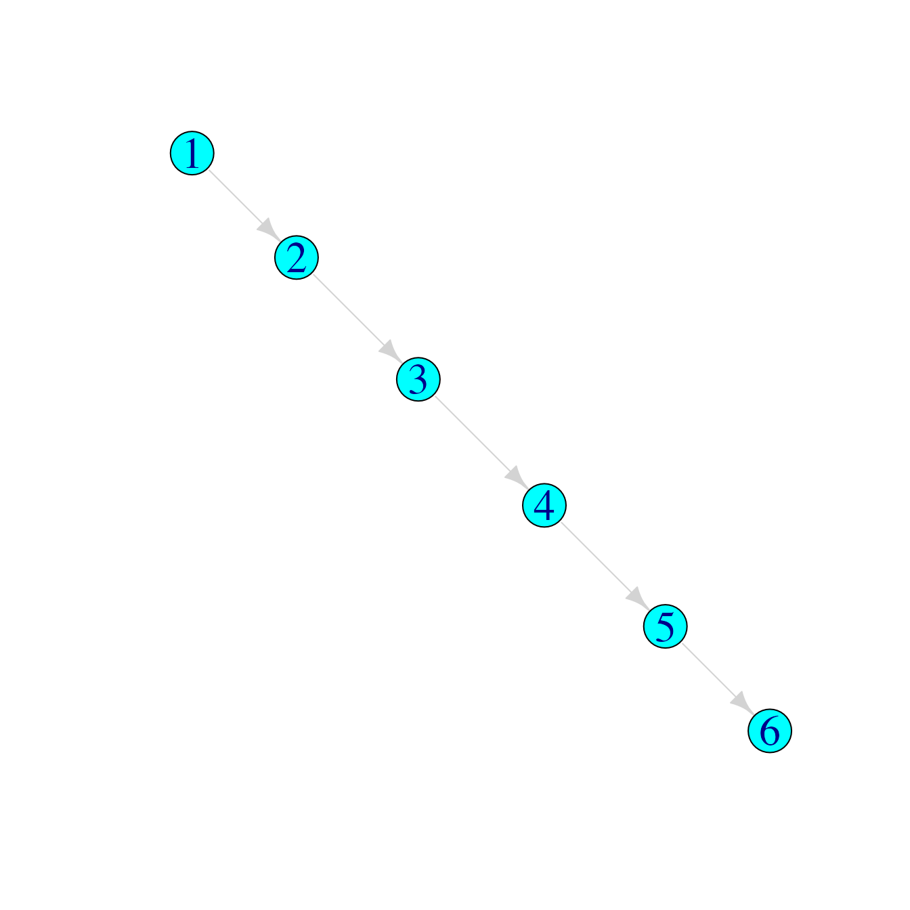
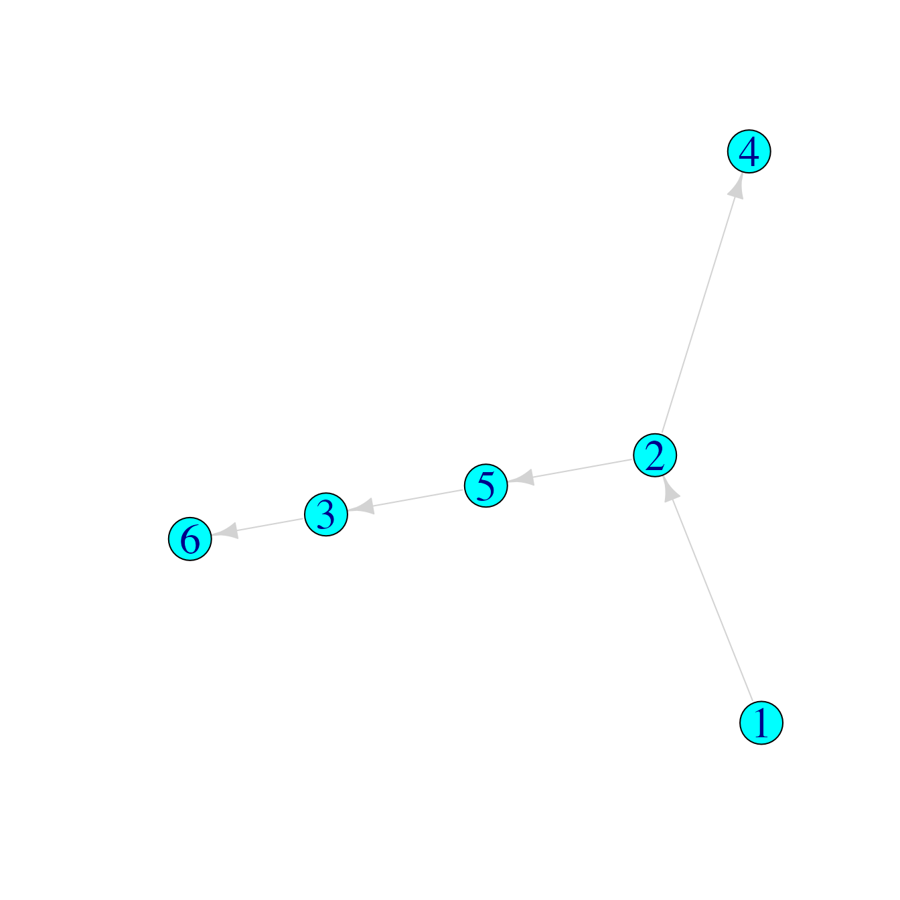
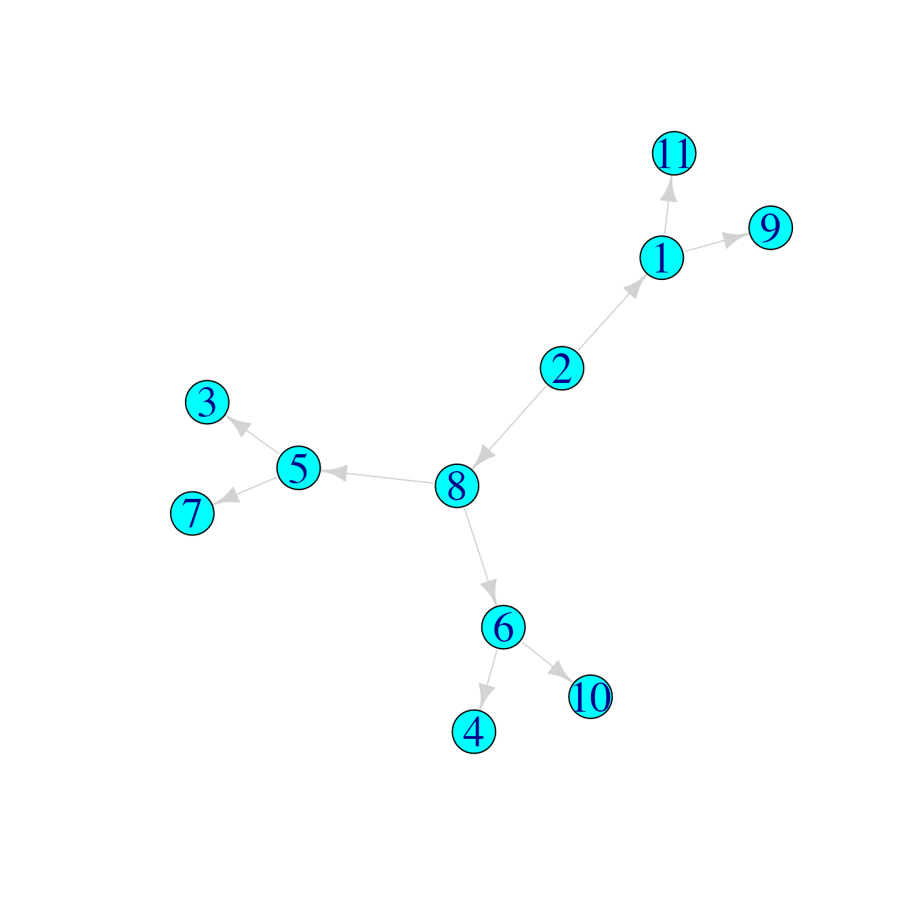

treespace worked example: Transmission trees
Michelle Kendall
2023-09-07
Source:vignettes/TransmissionTreesVignette.Rmd
TransmissionTreesVignette.RmdThis vignette demonstrates the use of treespace to compare a collection of transmission trees as proposed in Kendall et al. 2018.
First we load the package treespace:
treespace contains three functions for handling and comparing transmission trees:
-
findMRCIs()which takes a “who infected whom matrix” (the information about infectors and infectees; more on this below) and outputs:
sourceCase: the number of the node which is the source case, i.e. the common infector of all cases (outputs a warning if there is more than one source case).mrcis: a matrix where, for each pair of individuals i and j, the entry (i,j) is the node number of their MRCI. Note that if i infected j then this entry is i itself.mrciDepths: a matrix where, for each pair of individuals i and j, the entry (i,j) is the depth of their MRCI, defined as the number of edges from the source case. The source case has depth zero, its direct infectees have depth 1, and so on.
wiwTreeDist()which takes a list ofmrciDepthsmatrices and computes the distances between them. You have to supply the list of sampled cases in which you are interested, and then it takes the Euclidean distance between each pair of matrices restricted to the sampled cases (and written long-hand, as a vector)wiwMedTree()which takes a list ofmrciDepthsmatrices, the list of sampled cases, an optional list of weights, and outputs the median transmission tree
Examples
We define a “who infected whom matrix” as a matrix of two columns, where the first represents the infectors and the second represents their infectees. For example, a simple transmission chain could be represented like this:
tree1 <- cbind(Infector=1:5,Infectee=2:6)
tree1## Infector Infectee
## [1,] 1 2
## [2,] 2 3
## [3,] 3 4
## [4,] 4 5
## [5,] 5 6This can be easily visualised as a transmission chain using graph plotting packages such as igraph or visNetwork:
library(igraph)
# set plotting options:
igraph_options(vertex.size=15,
vertex.color="cyan",
vertex.label.cex=2,
edge.color="lightgrey",
edge.arrow.size=1)
tree1graph <- graph_from_edgelist(tree1)
plot(tree1graph)
Applying the function findMRCIs gives the following:
findMRCIs(tree1)## $sourceCase
## [1] 1
##
## $mrcis
## 1 2 3 4 5 6
## 1 1 1 1 1 1 1
## 2 1 2 2 2 2 2
## 3 1 2 3 3 3 3
## 4 1 2 3 4 4 4
## 5 1 2 3 4 5 5
## 6 1 2 3 4 5 6
##
## $mrciDepths
## 1 2 3 4 5 6
## 1 0 0 0 0 0 0
## 2 0 1 1 1 1 1
## 3 0 1 2 2 2 2
## 4 0 1 2 3 3 3
## 5 0 1 2 3 4 4
## 6 0 1 2 3 4 5Comparing three simple trees
Suppose we had other hypotheses for the transmission tree which describes who infected whom amongst these six cases:
## Infector Infectee
## [1,] 1 2
## [2,] 5 3
## [3,] 2 4
## [4,] 2 5
## [5,] 3 6
tree2graph <- graph_from_edgelist(tree2)
plot(tree2graph)
## Infector Infectee
## [1,] 2 1
## [2,] 2 3
## [3,] 2 4
## [4,] 2 6
## [5,] 6 5
tree3graph <- graph_from_edgelist(tree3)
plot(tree3graph)
Then we can use treespace functions to make the following comparisons:
m1 <- findMRCIs(tree1) # find the source case, MRCIs and MRCI depths for tree 1
m2 <- findMRCIs(tree2)
m3 <- findMRCIs(tree3)
matList <- list(m1$mrciDepths,m2$mrciDepths,m3$mrciDepths) # create a list of the mrciDepths matrices
matList## [[1]]
## 1 2 3 4 5 6
## 1 0 0 0 0 0 0
## 2 0 1 1 1 1 1
## 3 0 1 2 2 2 2
## 4 0 1 2 3 3 3
## 5 0 1 2 3 4 4
## 6 0 1 2 3 4 5
##
## [[2]]
## 1 2 3 4 5 6
## 1 0 0 0 0 0 0
## 2 0 1 1 1 1 1
## 3 0 1 3 1 2 3
## 4 0 1 1 2 1 1
## 5 0 1 2 1 2 2
## 6 0 1 3 1 2 4
##
## [[3]]
## 1 2 3 4 5 6
## 1 1 0 0 0 0 0
## 2 0 0 0 0 0 0
## 3 0 0 1 0 0 0
## 4 0 0 0 1 0 0
## 5 0 0 0 0 2 1
## 6 0 0 0 0 1 1
wiwTreeDist(matList, sampled=1:6) # find the Euclidean distances between these matrices, where all six cases are sampled## 1 2
## 2 5.916
## 3 10.630 7.616If we had only sampled cases 4, 5 and 6, so that “1”, “2” and “3” could be regarded as arbitrary names of inferred, unsampled cases, we would compute:
wiwTreeDist(matList, sampled=4:6)## 1 2
## 2 5.477
## 3 8.832 4.000which substantially changes the measures of similarities and differences between the trees.
Comparing many trees using an MDS plot
Finally, we demonstrate comparing a larger set of transmission trees and finding the median:
suppressWarnings(RNGversion("3.5.0"))
set.seed(456)
num <- 500
# create a list of 500 random transmission trees with 11 cases, where the source case is fixed as case 1:
treelistSC1 <- lapply(1:num, function(x) {
edges <- rtree(6)$edge # effectively creating a random transmission scenario
relabel <- sample(1:11) # create a relabelling so that infections don't all happen in numerical order, but we force the source case to be 1:
relabel[[which(relabel==1)]] <- relabel[[7]]
relabel[[7]] <- 1
relabelledEdges1 <- sapply(edges[,1], function(x) relabel[[x]])
relabelledEdges2 <- sapply(edges[,2], function(x) relabel[[x]])
cbind(relabelledEdges1,relabelledEdges2)
})
# create 500 more random transmission trees, but where the source case is fixed as case 2:
treelistSC2 <- lapply(1:num, function(x) {
edges <- rtree(6)$edge
relabel <- sample(1:11)
relabel[[which(relabel==2)]] <- relabel[[7]]
relabel[[7]] <- 2
relabelledEdges1 <- sapply(edges[,1], function(x) relabel[[x]])
relabelledEdges2 <- sapply(edges[,2], function(x) relabel[[x]])
cbind(relabelledEdges1,relabelledEdges2)
})
# combine:
combinedLists <- c(treelistSC1,treelistSC2)
# get mrciDepths matrices:
matList1000 <- lapply(combinedLists, function(x)
findMRCIs(x)$mrciDepths
)
# find pairwise tree distances, treating all cases as sampled:
WiwDists1000 <- wiwTreeDist(matList1000, sampled=1:11)Now that we have a pairwise distance matrix we can use multidimensional scaling (MDS) to view the relative distances between the trees in a 2D projection. We will colour the points in the projection by the “depth” of the corresponding tree, and use symbols to indicate the source case. For “depth” here we simply use the mean of each “mrciDepths” matrix.
wiwMDS <- dudi.pco(WiwDists1000, scannf=FALSE, nf=3)
library(ggplot2)
library(RColorBrewer)
wiwPlot <- ggplot(wiwMDS$li, aes(x=wiwMDS$li[,1],y=wiwMDS$li[,2]))
# prepare aesthetics
depths <- sapply(matList1000, function(x) mean(x))
sourcecase <- c(rep("1",num),rep("2",num))
# prepare colours:
colfunc <- colorRampPalette(brewer.pal(10,"Spectral"), space="Lab")
wiwPlot +
geom_point(size=4, colour="gray60", aes(shape=sourcecase)) +
geom_point(size=3, aes(colour=depths, shape=sourcecase)) +
scale_colour_gradientn("Mean of v\n",
colours=colfunc(7),
guide = guide_colourbar(barheight=10)) +
scale_shape_discrete("Source case\n", solid=T, guide = guide_legend(keyheight = 3, keywidth=1.5)) +
theme_bw(base_size = 12, base_family = "") +
theme_bw(base_size = 12, base_family = "") +
theme(
legend.title = element_text(size=20),
legend.text = element_text(size=20),
axis.text.x = element_text(size=20), axis.text.y = element_text(size=20)) +
xlab("") + ylab("")
The symmetry in the plot corresponds to the different source cases, and the trees are also clearly separated by depth.
Median trees
If our transmission trees corresponded to real data it could be
meaningful to find a single representative tree. To find the geometric
median tree(s) from a collection, we use the function
wiwMedTree:
med <- wiwMedTree(matList1000)This returns a list with components:
names(med)## [1] "centre" "distances" "mindist" "median"centreis the mean vector (which may not necessarily correspond to a valid transmission tree with a single source case)distancesgives the distance of each tree from the centre, as a vectormindistgives the minimum of these distancesmediangives the number(s) of the median tree(s)
Here the median trees are:
med$median## [1] 817The first one looks like this:
medgraph <- graph_from_edgelist(combinedLists[[med$median[[1]]]])
plot(medgraph)